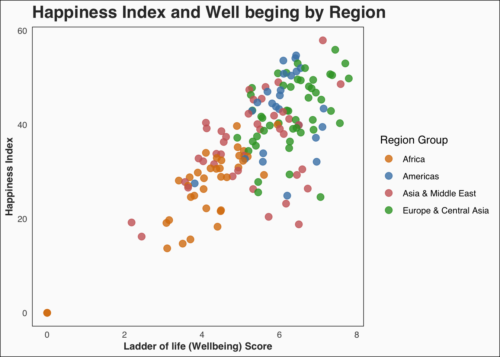
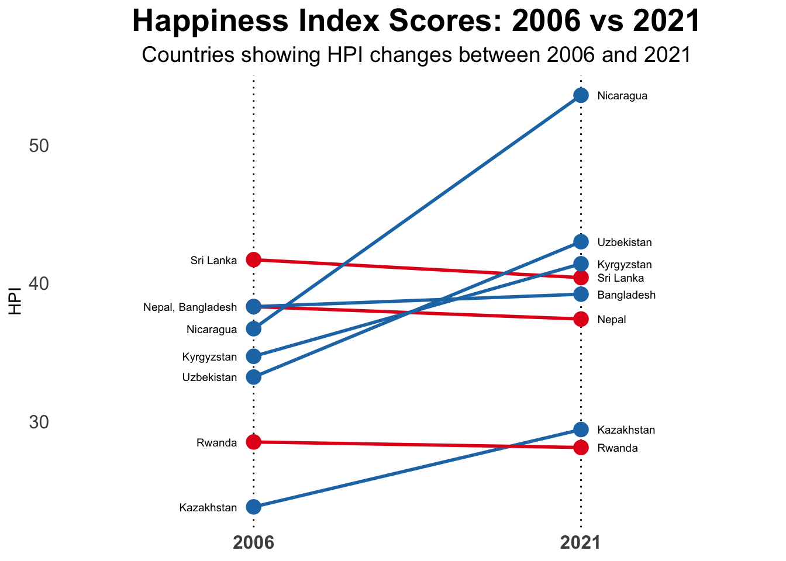

This plot illustrates the distribution of Happy Planet Index (HPI) scores across four key years: 2006, 2011, 2016, and 2021. The year 2006 marks the inception of the survey, while 2021 represents the latest available data. Rows with HPI scores of 0, indicating missing values, were excluded to ensure an accurate analysis of the distribution patterns.
The data reveals notable variability in HPI scores across the years. In 2006, the distribution is slightly right-skewed, with a noticeable peak around 30-40. By 2011, the distribution becomes more symmetrical, with most scores concentrated between 30 and 50. In 2016, the distribution shifts slightly upward, showing a higher concentration in the range of 35-50. However, in 2021, the distribution shifts downward, with most scores falling between 25 and 50.
This analysis underscores the dynamic nature of global well-being over time, reflecting shifts in sustainable well-being and life satisfaction across countries.
3.2 Exploration on happinest countries
Let’s investigate the HPI for some of the happiest countries in the world. The plot below shows the HPI for top 20 countries from 2006 to 2021. The blue dots indicate the mean HPI score across year and the yellow dots shows the score for 2021.
Code
past_HPI$Mean_HPI <-rowMeans(past_HPI[, 2:17], na.rm =TRUE)past_HPI_long <- past_HPI %>%pivot_longer(cols =`2006`:`2021`, names_to ="Year", values_to ="HPI") %>%mutate(Year =as.numeric(gsub("HPI_", "", Year))) top_countries <- past_HPI %>%arrange(desc(Mean_HPI)) %>%head(20) %>%arrange(Mean_HPI)past_HPI_long <- past_HPI_long %>%filter(Country %in% top_countries$Country)ggplot(data = past_HPI_long, aes(x = HPI, y =reorder(Country, Mean_HPI))) +geom_point(color ="gray", size =1.5, alpha =0.5) +geom_point(data = top_countries, aes(x = Mean_HPI, y =reorder(Country, Mean_HPI), color ="Mean score"),size =3, shape =16) +geom_point(data =filter(past_HPI_long, Year ==2021),aes(x = HPI, y = Country, color ="2021 score"), size =3, shape =16) +geom_hline(yintercept =seq_along(top_countries$Country), color ="gray40", linetype ="dashed", size =0.2) +labs(title ="Happiness Index through the Years",x ="Happiness Index", y =NULL, color =NULL) +scale_color_manual(values =c("Mean score"="#33a02c", "2021 score"="#4682B4"),labels =c("Mean score", "2021 score") ) +theme_minimal(base_family ="sans") +theme(panel.grid.major.y =element_blank(),panel.grid.minor =element_blank(),axis.text.y =element_text(hjust =1, color ="gray40"),axis.title.x =element_text(hjust =0, color ="gray40"),plot.title =element_text(size =17, face ="bold"),plot.subtitle =element_text(size =12, color ="gray40"),legend.position ="right" )
The plot highlights the variance and overall trends for countries with high HPI scores over the years. In many cases, the green dots (mean scores) and blue dots (2021 scores) are closely aligned, indicating consistency in performance across years. However, in some instances, a noticeable gap exists between the two points, suggesting either a decline or improvement in HPI in recent years. For example, Sweden shows a significant increase in 2021 compared to its mean score.
This visualization provides valuable insights into the happiest countries globally. By further investigating these nations, we can explore the traits or policies contributing to their high HPI. Additionally, the plot reveals that most countries with high HPI scores are concentrated in Europe and Asia, which brings us to the next question: What is the variance of HPI across continents.
3.3 Continental Variance
To better understanding the differences between continents, we plot a boxplot for all of the 8 continent.
Code
library(RColorBrewer)continent_mapping <-c("Latin America","North America & Oceania","Western Europe","Middle East & North Africa","Africa","South Asia","Eastern Europe & Central Asia","East Asia")hpi_2021$ContinentName <- continent_mapping[hpi_2021$Continent]qualitative_palette <-brewer.pal(n =length(unique(hpi_2021$ContinentName)), "Set3")ggplot(hpi_2021, aes(x = HPI, y = ContinentName, fill = ContinentName)) +geom_boxplot(width =0.6, alpha =0.8) +scale_fill_manual(values = qualitative_palette) +theme_minimal(base_size =12) +theme(panel.grid.major.y =element_blank(),panel.grid.minor =element_blank(),axis.text.y =element_text(size =10, color ="black"),axis.text.x =element_text(size =8, color ="black"),legend.position ="none",panel.border =element_blank(),axis.line =element_blank() ) +labs(title ="Continental Variance In 2021",x ="HPI Score",y ="" )
This boxplot illustrates the variance of HPI scores across 8 continents with the 2021 ranking. Western Europe, Latin America, and North America & Oceania show higher overall scores and tighter distributions, suggesting the well-being of residents in those area. In contrast, Africa and the Middle East & North Africa exhibit wider variability, indicating more significant disparities in well-being within these regions. This analysis emphasizes the importance of regional and local context when addressing global well-being challenges.
3.4 Differences between happy and unhappy countries
We define happy countries if their HPI is higher than the average, otherwise they are unhappy countries. We attempt to examine what makes the difference between happy and unhappy countries. Five variables are included here: population, life expectancy, wellbeing, GDP per capita, and carbon foorprint.
Code
library(gridExtra)library(grid) library(patchwork)#Split Data Based on Average HPIhpi_avg <-mean(hpi_2024$HPI, na.rm =TRUE) # Calculate average HPIhpi_2024 <- hpi_2024 %>%mutate(Lower_Happy =ifelse(HPI < hpi_avg, "Unhappy", "Happy")) # Add split columnhpi_2024$Population <- hpi_2024$`Population (thousands)`/1e3variables <-c("Population","Life Expectancy (years)","Ladder of life (Wellbeing) (0-10)","GDP per capita ($)","Carbon Footprint (tCO2e)")titles <-c("Population(Million) Distribution","Life Expectancy Distribution","Wellbeing Distribution","GDP per Capita Distribution","Carbon Footprint (tCO2e)")plot_list <-lapply(seq_along(variables), function(i) { var <- variables[i] ggplot(hpi_2024, aes_string(x =paste0("`", var, "`"), fill ="Lower_Happy")) +geom_density(alpha =0.7, color ="black") +scale_fill_manual(values =c("#4682B4", "#CC6666")) +# Customize colorslabs(x = var, y =NULL, fill ="Group", title = titles[i]) +# Add plot titletheme_minimal() +theme(axis.text.y =element_blank(),axis.ticks.y =element_blank(),panel.grid.major.x =element_line(color ="gray", linetype ="dotted"),panel.grid.minor =element_blank(),axis.title.x =element_text(size =10, face ="bold", family ="monospace"),plot.title =element_text(size =10, face ="bold", hjust =0.5), legend.position ="bottom",legend.title =element_text(size =8, face ="bold"), legend.text =element_text(size =6), legend.key.size =unit(0.5, "cm") )})combined_plot <-wrap_plots(plot_list, ncol =3) +plot_layout(guides ="collect") +# Collect a single shared legendplot_annotation(title ="Differences Between Happy & Unhappy Countries",theme =theme(plot.title =element_text(size =15, face ="bold", hjust =0.5, color ="#323232"),plot.subtitle =element_text(size =12, face ="italic", hjust =0.5, color ="gray"),legend.position ="bottom" ) )# Print the final combined plotprint(combined_plot)
From the plot, happy countries consistently exhibit notably high life expectancy and wellbeing scores. In contrast, unhappy countries display longer right tails for carbon footprint, which aligns with the notion that excessive carbon emissions negatively impact quality of life. A significant proportion of unhappy countries also have extremely low GDP per capita, highlighting economic challenges. Interestingly, while many unhappy countries have low carbon footprints, others exhibit exceptionally high levels. Low carbon footprints might be attributed to a lack of industrial technology, resulting in fewer machines and lower levels of industrial activity.
3.5 Relationship between the HPI and Well Being Score
Let’s further examine the relationship between HPI and Well Being Score. We also take into account for the continental difference. To clearly visualize the HPI by continents, we regroup 8 of them to 4 in total.
Code
hpi_2024 <- hpi_2024 %>%mutate(Region_Group =case_when( Continent %in%c(1, 2) ~"Americas", # Latin America, N. America & Oceania Continent %in%c(3, 7) ~"Europe & Central Asia", # Western Europe, Eastern Europe & Central Asia Continent %in%c(4, 6, 8) ~"Asia & Middle East", # Middle East, South Asia, East Asia Continent ==5~"Africa", # Africa ))ggplot(hpi_2024, aes(x =`Ladder of life (Wellbeing) (0-10)`,y = HPI, color = Region_Group )) +geom_point(size =3, alpha =0.8) +labs(title ="Happiness Index and Well beging by Region",x ="Ladder of life (Wellbeing) Score",y ="Happiness Index",color ="Region Group" ) +scale_color_manual(values =c("Americas"="#4682B4","Europe & Central Asia"="#33a02c","Asia & Middle East"="#CC6666","Africa"="#D97D0D" ) ) +# Customize the themetheme_minimal(base_family ="sans") +theme(panel.grid.major =element_blank(),panel.grid.minor =element_blank(),panel.background =element_rect(fill ="#fbfbfb"),plot.background =element_rect(fill ="#fbfbfb"),plot.title =element_text(size =17, face ="bold", color ="#323232"),plot.subtitle =element_text(size =12, face ="italic", color ="gray40"),axis.title.x =element_text(size =10, face ="bold", color ="#323232"), # Removed `family`axis.title.y =element_text(size =10, face ="bold", color ="#323232"),legend.position ="right",legend.background =element_blank(),legend.box.background =element_rect(fill ="transparent", color =NA) )

The plot highlights the strong positive association between happiness and wellbeing across regions. Countries in Europe & Central Asia show the highest combined levels of wellbeing and happiness, while Africa generally lags in both metrics. These insights underline the importance of focusing on wellbeing improvements to enhance happiness, especially in underperforming regions. Further investigation into specific factors contributing to the variability within and across regions, such as economic conditions, governance, and cultural practices, could provide valuable insights into strategies for improving global happiness.
3.6 Relatinship between HPI and Life Expectancy
we now shift our focus to exploring the relationship between HPI and life expectancy.
Code
hpi_2024 <- hpi_2024 %>%rename(HPI =`HPI`, # Keep HPI column nameLife_Expectancy =`Life Expectancy (years)` ) %>%mutate(HPI =as.numeric(HPI), Life_Expectancy =as.numeric(Life_Expectancy) )# Remove rows with missing datahpi_clean <- hpi_2024 %>%filter(!is.na(HPI), !is.na(Life_Expectancy))model <-lm(HPI ~ Life_Expectancy, data = hpi_clean)ggplot(hpi_clean, aes(x = Life_Expectancy, y = HPI)) +geom_point(color ="blue", alpha =0.6) +geom_smooth(method ="lm", color ="red", se =TRUE) +labs(title ="Relationship Between HPI and Life Expectancy",x ="Life Expectancy (years)",y ="HPI" ) +theme_minimal()
The linear regression analysis reveals a significant positive relationship between Life Expectancy and HPI. Specifically, the regression coefficient for Life Expectancy is 0.812, indicating that each additional year of life expectancy is associated with an approximate 0.81-point increase in HPI. These findings underscore the crucial role of Life Expectancy to HPI, suggesting that the lengh of life plays a big role in the happiness of residents in a country.
3.7 Other factors
We want to further examine what are the correlation among variables.
Code
hpi_2024 <- hpi_2024 %>%mutate(Above_CO2_Threshold =ifelse(`Carbon Footprint (tCO2e)`>`CO2 threshold for year (tCO2e)`, 1, 0 ) )heatmap_data <- hpi_2024 %>%select( HPI,Population =`Population (thousands)`, Life_Expectancy,Wellbeing =`Ladder of life (Wellbeing) (0-10)`,GDP_per_capita =`GDP per capita ($)`, Above_CO2_Threshold )# Ensure numeric columns for correlation (convert boolean if needed)heatmap_data$Above_CO2_Threshold <-as.numeric(heatmap_data$Above_CO2_Threshold)# Compute the correlation matrixcor_matrix <-cor(heatmap_data, use ="complete.obs")# Melt the correlation matrix for ggplotmelted_cor_matrix <-melt(cor_matrix)# Create the heatmapggplot(data = melted_cor_matrix, aes(x = Var1, y = Var2, fill = value)) +geom_tile(color ="white") +geom_text(aes(label =round(value, 2)), color ="black", size =3) +# Add correlation valuesscale_fill_gradient(low ="white", high ="#8C2B3D", name ="Correlation") +labs(title ="Heatmap of HPI and Selected Variables",x ="Variables",y ="Variables" ) +theme_minimal() +theme(axis.text.x =element_text(angle =45, vjust =1, hjust =1),axis.title =element_text(size =12, face ="bold"),plot.title =element_text(size =14, face ="bold", hjust =0.5) )
This heatmap underscores the multifaceted nature of HPI, influenced by well-being, longevity, economic factors, and environmental sustainability. The strong correlations between HPI and subjective well-being (Ladder of Life) and Life Expectancy again confirms the importance of quality of life metrics in assessing national happiness. The weak association with GDP per Capita suggests that economic wealth alone is not a primary driver of HPI, which may be anti-intuition.
3.8 Changes Over Time
After examining the important variables for determining the HPI, we want to take a look at the changes in countries for HPI. Is the unhappy countries getting happier? And vice versa. We select the 5 most happinest countries in 2006 and 5 least happiest countries in 2006 and track their change of HPI across years.
This plot highlights the consistent differences in well-being among countries over time. High-performing nations like Costa Rica and Colombia consistently maintain scores above 50, reflecting stability and progress, while countries like Zimbabwe, and Chad struggle with scores below 30. These variations point to disparities in economic, social, or environmental conditions. Notably, the high-performing countries exhibit remarkable stability, while lower-ranking nations experience more volatility, suggesting vulnerabilities to external or internal challenges. These trends underscore the need for targeted efforts to support struggling countries and sustain progress in happy ones.
3.9 Improvement and Regression of HPI across years
We attempt to dive further into the changes of HPI throughout years. Specially, we now aim to look closer to the changes between 2006 and 2021 of a small sample of countries.
Code
# Randomly sample 8 countriesset.seed(809)sample <- past_HPI %>%filter(`2006`!=0, `2021`!=0) %>%# Exclude countries with HPI of 0 for 2006 or 2021slice_sample(n =8) %>%select(Country, `2006`, `2021`)countries_2006 <- sample %>%group_by(`2006`) %>%summarize(Country =paste(Country, collapse =", "))countries_2021 <- sample %>%group_by(`2021`) %>%summarize(Country =paste(Country, collapse =", "))sample_long <- sample %>%pivot_longer(cols =c(`2006`, `2021`), names_to ="Year", values_to ="HPI") %>%mutate(Year =as.numeric(Year))options(repr.plot.width =15, repr.plot.height =8) ggplot() +geom_vline(xintercept =c(1, 2), color ="black", linetype ="dotted", size =0.5) +geom_segment(data = sample, aes(x =1, xend =2, y =`2006`, yend =`2021`, color =ifelse(`2021`>`2006`, "#1f78b4", "#e31a1c") ), size =1) +geom_point(data = sample, aes(x =1, y =`2006`, color =ifelse(`2021`>`2006`, "#1f78b4", "#e31a1c") ), size =4) +geom_point(data = sample, aes(x =2, y =`2021`, color =ifelse(`2021`>`2006`, "#1f78b4", "#e31a1c") ), size =4) +geom_text(data = countries_2006, aes(x =1-0.05, y =`2006`, label = Country ), hjust ="right", size =2.5) +geom_text(data = countries_2021, aes(x =2+0.05, y =`2021`, label = Country ), hjust ="left", size =2.5) +labs(title ="Happiness Index Scores: 2006 vs 2021",subtitle ="Countries showing HPI changes between 2006 and 2021",x =NULL,y ="HPI" ) +scale_color_identity() +scale_x_continuous(limits =c(0.5, 2.5),breaks =c(1, 2), labels =c("2006", "2021")) +scale_y_continuous(limits =c(min(sample_long$HPI) , max(sample_long$HPI))) +theme_minimal() +theme(plot.title =element_text(size =20, face ="bold", hjust =0.5),plot.subtitle =element_text(size =14, hjust =0.5),axis.text.y =element_text(size =12),axis.text.x =element_text(size =12, face ="bold"),axis.ticks =element_blank(),panel.grid =element_blank(),legend.position ="none" )

The graph effectively highlights disparities in progress between 2006 and 2021. Countries like Nicaragua show significant improvement, with the highest increase in HPI, indicating progress in happiness. Nepal, and Sri Lanka remain relatively stable, indicating limited change. On the other hand, Rwanda and Kazakhstan show noticeable declines in HPI, reflecting potential challenges in maintaining life satisfaction. It gives us insights on further investigate on how countries like Nicaragua manage to improve its HPI.
3.10 What are the biggest movers?
The success of improving countries like Nicaragua prompts us to explore which other nations have made significant strides in their happiness levels. To investigate this, we selected the countries that have shown the most substantial changes over time.
Code
# Filter the top 20 biggest moverstop_20 <- past_HPI %>%filter(`2006`!=0, `2021`!=0) %>%mutate(Change =abs(`2021`-`2006`)) %>%arrange(desc(Change)) %>%slice(1:20) top_20 <- top_20 %>%mutate(Highlight =ifelse(row_number() <=3, "Top Increase", ifelse(row_number() > (n() -3), "Top Decrease", "Neutral")))plot_data <- top_20 %>%pivot_longer(cols =c(`2006`, `2021`), names_to ="Year", values_to ="HPI") %>%mutate(Year =as.numeric(Year))low_c <-"#CC6666"high_c <-"#33a02c"neutral_c <-"#e7e9e7"ggplot(top_20, aes(x =reorder(Country, Change), y = Change, fill = Highlight)) +geom_bar(stat ="identity", alpha =0.7) +scale_fill_manual(values =c("Top Increase"= high_c, "Top Decrease"= low_c, "Neutral"= neutral_c)) +theme_minimal(base_family ="sans") +theme(axis.title.x =element_blank(),axis.title.y =element_blank(),axis.text.x =element_text(angle =90, vjust =0.5, hjust =1, size =8),axis.text.y =element_text(size =8),panel.grid =element_blank(),panel.background =element_rect(fill ="#fafafa", color =NA),plot.background =element_rect(fill ="#fafafa", color =NA),legend.position ="none" ) +labs(title ="The Biggest Movers",subtitle ="These countries have had the largest change in HPI between 2006 and 2021" )
This bar chart displays the top 20 countries with the largest changes in their Happy Planet Index (HPI) between 2006 and 2021, with green bars representing increases and red bars representing decreases. The countries with the most significant positive changes include Lebanon, Nicaragua, and India, while the most substantial negative changes are observed in Latvia, Benin, and Uzbekistan. From this plot, we can clearly see that HPI movements can vary a lot for different countries.